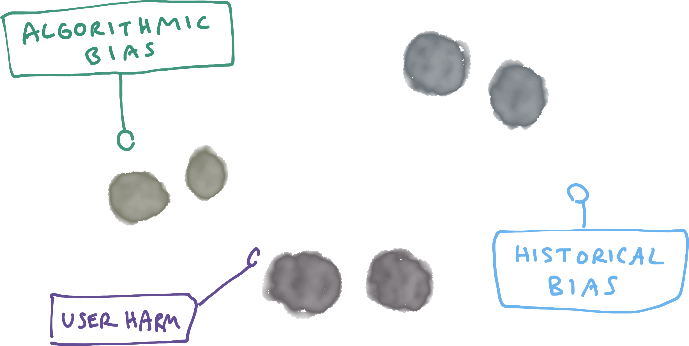
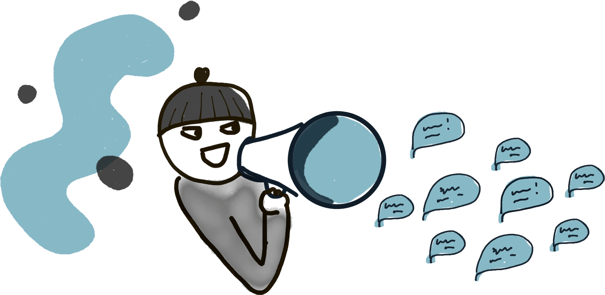

Section 1
Friend or fraud?
So, let's get stuck into it!
Lineup
Developing a healthy cynicism about data sources
Mapping knowledge states
Designing for failure first
Upstream prevention vs downstream mitigation
Four primary findings I'll walk you through. These findings and techniques I offer apply to any kind of automation or decision system. Not telco or fraud-specific, they apply to you!
Ethics ops consulting
debias.ai
At the beginning of 2020 (which is either a year or a lifetime ago, who even knows) I began consulting with a telco for Debias AI. I am primarily embedded in their fraud detection team. Their approach to fraud detection is pretty standard - a mix of monitoring, internal business rules, and third party systems with proprietary fraud ML algorithms.

Ethics ops is like devops for ethics - I introduce a harm identification and mitigation lens, and work on monitoring / notifications / alerts as well as product flows and feedback loops.
A balancing act
Fraud is an interesting space in which to discuss ethics. Not only are you (the company) capable of inflicting harm on your customers, you are also under attack by a sub-set of customers who mean you harm. You have to balance the real, often urgent concerns of identifying bad behaviour & halting costs while also acknowledging the possibility of false positives, and considering how you might identify and support any innocent parties who accidentally get caught in the cross-fire. It's a war of attrition - like email spam.
Finding #1
Developing a healthy cynicism about data sources
When we start to feel really comfortable is usually when we discover something can be totally different than our expected interpretation.
Data (interpretation) pride comes before a fall
The textivist... (NB Marketing use - overseas texting is EXPENSIVE and outside of most terms of use for personal plans). Self-automation... The auto-call on smartwatch...
Deconstructing your proxy
All data is a proxy - it's an approximation of the thing we actually want to measure. (time allowing - Apple CC example).
Signal
Activity


Persona
This is the framing I use, and I think it helps us be explicit about the logic leaps we are making. Always asking the question how good a proxy is this data for the thing I REALLY want to know? Don't forget we also measure anti-signals.
A $600m mistake?
""[The dataset] is an index of Australian addresses. The dataset does not contain a list of premises," he said."
— Another 300k NBN connections to cost $600m, CEO blames blowout on bad address data
NBN budget increased to deal with 300k premises that were not captured in their original sweep. Imagine being the unit on a block which was overlooked? Or being the last on your street to get upgraded? This impacts work, study, house prices, lives.
Look at your raw data
Not just at dashboards
Data scientists please use your tools to interrogate raw data validity: does it actually meet our expectations? Types, formatting, data quality? Don't just examine 1st 10 results in a data table. SMEs & everyone else - get up close and personal with incoming data too, look for the human stories behind the data. You'll be surprised what you learn!
Data misinterpretation is easy , and likely under pressure
One of the most interesting things about working with fraud is the pressure it puts on data interpretation in periods of attack. Like putting data science hygiene through the wringer - in unexpected bursts.
For example...
Maintenance outages (planned) causing delays in data stream. Fixed delay in timeframe from data ingest > running feature > alert in slack - got us every time!
Design for cognitive load
Simple doesn't imply you're stupid
Wherever possible, add labels. Be explicit. Make it impossible to misinterpret. Just because your team is smart, technical, doesn't mean you want them to have to be brilliant detectives under time and cost pressure.
Litmus test
On a quick glance, is this easy to misunderstand?
Even if you're not working in the space of fraud, we experience this same kind of pressure all the time. When a customer discovers a bug in production. When there's an outage with a third party, etc.
Pointers for data interpretation
Using DSL (domain specific language)?
Add units
Absolute (total count) or relative (%)?
Is the data recency clear?
Finding #2
Mapping knowledge states
ok. so you probably knew this was coming. This is the section where i tell you that the best way to improve your data science practice as a whole is to do better, much better, at the boring science bits.
Beware the swamp of lazy assumptions
Anecdote: when joined telco there was a lot of confusion about what types of fraud were, and what they were called. Names were quite confusing, unintuitive, imprecise language, name overlaps! I wasn't the only one who was confused.
Implicit vs Explicit knowledge
Become a knowledge excavator
Just because a thing is knowable, doesn't mean it is known. Often the first step to establishign a shared understanding is to sniff out this existing implicit knowledge and formalise it.
Naming matters
Build a shared vocabulary
Build shared mental models
Avoid name-space clashing
For example
International revenue sharing fraud
these are confusingly different names for the same thing unrelated to Call Reselling (but these often get confused)
Personas

For example - a persona for people who overuse promotions which describes a 'deal seeking behaviour', very different to the persona of someone trying to pose as a telco and on-sell services. We established a shared model and vocab that stakeholders from support and ops to data science can use.
Defining your baseline
If you don't have a shared understanding it's hard to move forwards. Needed for all experiments, hypotheses you want to try moving forwards. Also - perhaps minor discrepancies in what is the current state will reveal a question to investigate?
For example
Looking at the logs
Looking at the history of what actions had been taken on a service number - can make longitudinal analysis very difficult if the reasons aren't well documented AND if there is no way to observe the occurance of false positives. If you don't know when you automation was wrong, hard to use that data with confidence. Also - maybe your logs aren't the source of truth, ok! as long as somewhere there is a source of truth.
Data schemas

For internal experiments. Take the job of data capture about your customers seriously. Take the time to think about what fields, what meta data will be useful for investigations. Future you will thank you.
Changing our language
"We'll wait until we're 100% certain... no make that 99% certain"
Colleague who has started to change his language
Added uncertainty in the space of fraud
You really can't trust what people say
In UXR you develop a sniff test for honesty and vulnerability vs bulshit answers. But in the fraud space you had this added complexity of knowing that sometimes customers may be lying or trying to game the system to meet their own ends. Dealing with this day-in day-out can make these discussions feel instantly suspect, and you'll start to see fraud everywhere.
The antidote to suspicion
Setting the intention to be respectful
The best way to avoid falling into this trap is to be explicitly, deliberately kind and respectful in all our communications
bUt wHAt iF iT's A BAd AcTor?
So what?
What is the cost of all outcomes? Being respectful to someone who is trying to rip you off vs speaking harshly to a legit customer by accident? Or disconnecting a bad actor (save $) vs a legit or differently abled customer (lose $). Also consider also reputational harms. Focus on your automation goal.
Keep the moralising out of it
Being 'right' isn't helpful. You don't know that person, you don't know their story.
Tip
Describe behaviours , not people
Describe behaviour (service misuse) not people (fraudster). There's literally no value in applying a moralising title to a person. THere's every possibility of harm, on both sides, if you get it wrong.
Finding #3
Designing for failure first
In my experience, we have been experimenting with designing comms flows to provide clearer feedback to people whose service came under suspicion, and allow for them to request support if they think there has been a mistake. In some cases, there was a warning, others was after-the-fact. This was... challenging... unexpected work.
If you don't ask,
If your system makes an incorrect assumption, are you in a position to find out? I think of this as the rule of lurkers vs contributors. Most people won't bother to give you feedback. In the space of fraud, if you have taken an action on a service they're more likely to churn than to make an effort to reach out to you - and why would they bother based on a market where churn is the norm and it's easy to swap providers? If they are really angry you might get feedback - but through the form of a complaint to the TIO (the regulator) - also a bad outcome.
Feedback loops must be
Intuitive
Contextual
Timely
I'm a fan of micro-feedback, small and contextual questions that are really lightweight and easy to answer.
Plan time for...
Customer support
Product/model improvements
Integrating your learnings
Be explicit
If you can't imagine consequences, you're not thinking hard enough
The best way to prepare yourself to design in this world is to be ultra explicit about the goals of your system, and the possible harms that might occur to your end users.
Chaser
"The goal is to protect the graph against all attacks rather than to maximize the accuracy of any one specific classifier. The opportunity cost of refining a model for one attack may be increasing the detection and response on other attacks."
— Facebook Immune System by Tao Stein, Roger Chen, Karan Mangla
Your system will get it wrong
So how will it handle failure?
Start from the assumption that your system is not perfect. We know this is the case with any machine learning or statistical models. The literal only assumption you can make is that it will be wrong for some percent of the time. And ever removing the issue of statistical models there are plenty of other aspects of your tech stack and human stack that point to the strong certainty of some amount of failure: complexity, culture, etc.
Litmus test
What if this happened to my most vulnerable customer?
In the space of a telco, we're asking what could go wrong with a mobile service level action. I find this question useful for thinking about service level actions. It helps frame the cost of false positives and makes us more focused on the minimum viable intervention needed to achieve our goals of capping these costs.
Harm mapping
Recommended starting point
github.com/summerscope/mapping-fair-ml
This is a whole topic but just to point to it, this is the bit where we think about what we might get wrong, and what are the consequences. There are a whole bunch of tools and frameworks out there to try - ethics litmus tests among them.
Starting points
UI interactions (Get help / This isn't right)
Email / SMS templates
Support scripts for conversations
Data schema design
Places you could think about starting for a feature design / product flow.
Prepare for pushback
People don't like it when you make bad assumptions about them!
Making the implicit explict is going to be uncomfortable
Designing an escape hatch
I think of this work as designing the escape hatch. You don't want to have to use it, but if you need it you sure hope it's there.
Litmus test
Could any customer go through my escape hatch, recover and remain a happy customer?
Sometimes you have to think creatively - pitch a friction as a value add. "We are working hard to protect your identity and your account's safety" is a good one, for instance. Test out your explanations and flows on random people NOT those who match the assumptions your system made as a way to assess the quality of the solution.
"Delays in feedback loops are common causes of oscillations. If you're trying to adjust a system state to your goal, but you only receive delayed information about what the system state is, you will overshoot and undershoot."
- Leverage Points: Places to Intervene in a System by Donella Meadows
The escape hatch is also your feedback loop telling you about the state of your system.
Finding #4
Upstream prevention vs downstream mitigation
What can you do in the product? Vs what do you try to intervene on after it happens?
These sorts of things will happen. I’m very intentional about not saying abuse "might" happen - if it can, it will.
- Eva PenzeyMoog newsletter
I see a reseblance between Fraud and Abuse (tech used in DV / DA). These are people with a different agenda to yours. They are looking for vulnerabilities they can exploit for their own ends.
Product use cascade
What you can do in the product
Intentions, framing, design
Culture of your community
...
Terms of use
It's a hierarchy of permissions - #1 trumps #2, #3 trumps #5, etc
Possible = permissible
I can't say it more strongly. If you don't care to make it impossible to do something in your product, that's tacit permission for the behaviour to occur. Even if it's not intended, designed for, etc. It sucks, but it's the nature of the beast.
Setting boundaries is design
I we often miss out on opportunities to do this well. Marketing, on-boarding, engagement comms - these are all opportunities to show how people can and should be successful using your product, and to offer little nudges away from the kinds of behaviour you don't want to see.
Think of TOC - necessary evil but not the intuitive place to enact change if it's possibel to go up the cascade
Downstream is usually more costly than upstream
In retail - think promotions abuse, etc. Can you add guardrails in at the planning stage? Finding and dealing with behaviour sucks. Anyone who's worked on an abuse team will testify to this. It's not always possible, but if you can resolve something with a product change rather than monitoriing for it and remediation after the fact - usually preferable.